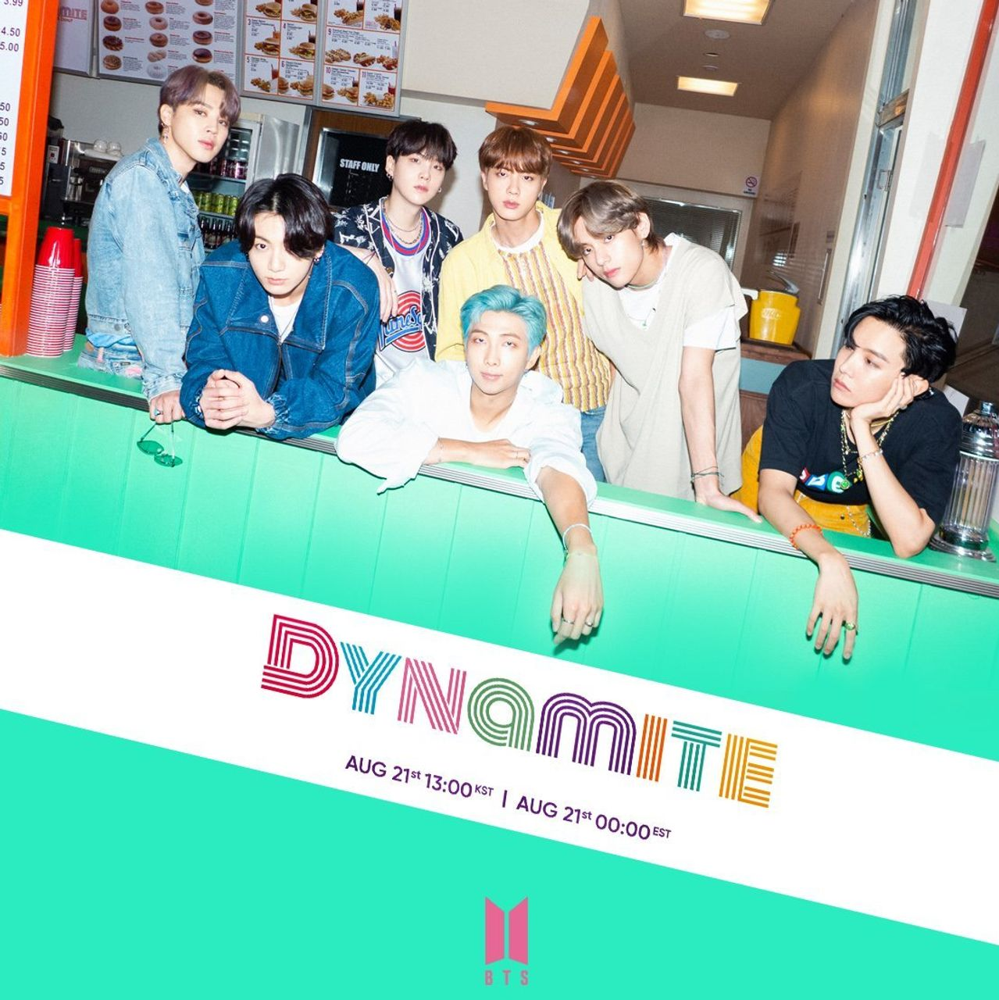

As if any of us needed another reason to love BTS, the Bangtan Boys gave us a single that helped us briefly forget about the dumpster fire that was 2020. When “Dynamite,” their first all-English song, dropped in August of last year, it immediately broke records…and it still is! In honor of them nabbing a Grammy nomination for “Dynamite” and performing it at the ceremony this year—and also in honor of me needing to talk about them at least once per day—it’s time to break down the feel-good lyrics.
But most importantly, the song is meant to unite and be a gift to help fans get through this year. During an interview with Zane Lowe, RM described “Dynamite” as being “made of positive vibes, energy, hope, love, the purity, everything.” He continued, “Recording this song was really fun, and like Jin said, we’re going through difficult times so we tried to have more fun working on this song. We made this song in hopes of giving energy to the listeners. We’re glad this song turned out great and hope a lot of our fans can listen to it to receive the positive energy we tried to incorporate in the song.”
"Dynamite" was met with mostly positive reviews from music critics upon release, with emphasis on its catchiness and broadly appealing retro sound.
'Cause I, I, I'm in the stars tonight
So watch me bring the fire and set the night alight
Shining through the city with a little funk and soul
So I'ma light it up like dynamite, whoa
Dynnnnnanana, life is dynamite
Dynnnnnanana, life is dynamite
Shining through the city with a little funk and soul
So I'ma light it up like dynamite, whoa...

“Life Goes On” is a song by BTS. It was released on November 20, 2020, as the lead single from their fifth Korean-language studio album, Be. The song was written by Pdogg, Ruuth, Chris James, Antonina Armato, Suga, J-Hope, RM, and Jungkook, with Pdogg handling the production. A pop, alternative hip hop, and K-pop song, its lyrics discuss the COVID-19 pandemic and offer a message of hope and comfort to listeners.
“Life Goes On” debuted at number one on the Billboard Hot 100 chart, becoming the band's third number-one single in the United States and the first song to top the chart sung predominantly in Korean. It also topped the charts in Australia, Canada, Japan, Malaysia, Singapore, and South Korea, and reached the top ten in various other countries. The song received generally positive reviews from music critics, who praised its comforting message and the band's vocal delivery.
One day the world stopped
Without warning
Spring didn't know to wait
Showed up not even a minute late
Streets erased of footprints
I lie here, fallen to the ground
Time goes by on it's own
Without a single apology...

“Butter” is a song by BTS. It was released on May 21, 2021, through Big Hit Music and Sony Music Entertainment. The song was written by Jenna Andrews, RM, Alex Bilowitz, Sebastian Garcia, Rob Grimaldi, Stephen Kirk, Ron Perry, and Suga, with the latter two also handling the production. A disco-pop, dance-pop, and pop song, its lyrics discuss confidence and self-love.
“Butter” debuted at number one on the Billboard Hot 100 chart, becoming the band's fourth number-one single in the United States. It also topped the charts in various other countries, including Australia, Canada, Japan, Malaysia, Singapore, and South Korea. The song received generally positive reviews from music critics, who praised its catchiness and the band's vocal delivery.
Smooth like butter
Like a criminal undercover
Gon' pop like trouble
Breakin' into your heart like that (Ooh)
Cool shade stunner
Yeah, I owe it all to my mother
Hot like summer
Yeah, I'm makin' you sweat like that
Break it down....
February 13th, 2022: it’s the 5th anniversary of the release of “Spring Day” by BTS. If you watch and listen closely, this song is always mentioned in conversations when talking about BTS’ music and their phenomenal discography. To others who are not familiar, it might seem strange to learn this is a b-side and yet, is an immensely popular song by the group. This b-side only appears on their repackaged album called Wings:You Never Walk Alone and has not left the Korean charts, the Gaon’s Digital Charts, since its release.
These are some of the messages that have been incorporated into the song. Although it is a song missing someone who is far away, a tragic incident, they have not fully confirmed the song is about the Sewol Ferry disaster.
Even if the group has not officially confirmed the meaning of the song, many already know what the song means. Yes, it is about a sad event, and yes it is about longing. Those two things are what the song is certainly about, as many have gone through personal hardships and see their struggles in the song. To understand that this song has the interpretations to be seen from a lens of a single tragic and traumatic event is all the confirmation we need for something that maybe, doesn’t need to be expressed in words but understood with the heart.
아침은 다시 올 거야
The morning will come again
어떤 어둠도 어떤 계절도
Because no darkness or no season
영원할 순 없으니까
can last forever
벚꽃이 피나봐요
It seems like the cherry blossoms are blooming
이 겨울도 끝이 나요
This winter is also coming to its end